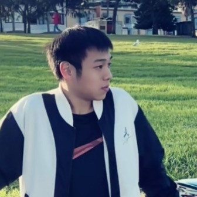
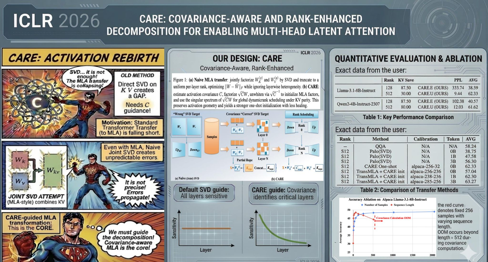

Efficient ML Algorithm
Algorithm and architecture innovations that improve capability while reducing compute, memory, and deployment cost.
Future Open Source Research
We study how to make machine learning more capable, efficient, and practical at scale through four connected directions: algorithm and architecture innovation, systems optimization, quantization, and training-driven modeling.
Welcome to the Future Machine Learning & Systems (FutureMLS) Lab. We work at the intersection of machine learning and computer systems. Today's foundation models are remarkably capable but costly to train and serve. Our mission is to close the gap between rapidly growing model capability and the real-world cost of deploying these models.
We pursue algorithm-system co-design across four connected themes: Efficient ML Algorithm for algorithm and architecture innovation, Efficient ML System for systems optimization, Quantization as a core research focus, and Modeling for improving models through training. Our work spans the AI stack, from methods and model design to kernels, runtimes, and serving systems, and is open-source, reproducible, and built to be used.
Zhongzhu Zhou (Charlie Zhou) is the founder and principal investigator of the Future Machine Learning & Systems Lab. He is a Senior Research Scientist on the Turbo Team at Together AI, and earned his Ph.D. at the School of Computer Science, University of Sydney.
His research spans efficient machine learning and systems — from pretraining quality to efficient algorithms and algorithm–system co-design that bridges emerging ML/LLM methods and real-world applications, improving both productivity (usable, robust stacks) and performance (throughput, memory, and cost-efficiency). He received his B.Eng. (Hons) from Sun Yat-sen University, and has interned at Dolby, the DeepSpeed team at Microsoft, and Tencent.
He leads projects across the lab's four themes, including OSCAR (2-bit KV-cache quantization) and CARE (covariance-aware Multi-Head Latent Attention).
Four directions, one goal: efficient and capable AI at scale.
Algorithm and architecture innovations that improve capability while reducing compute, memory, and deployment cost.
System-level optimizations that make efficient methods practical end-to-end, from kernels and runtimes to high-throughput serving.
A core research focus on low-bit weight, activation, and KV-cache quantization that preserves accuracy while cutting memory and compute.
Model improvement through training optimization, architecture design, and adaptation methods that make models stronger and easier to use.
OSCAR crosses 300 ★ on GitHub in its first week — thanks to the open-source community.
OSCAR released — 2-bit KV-cache serving at 2.28 effective bits/element with near-BF16 accuracy on Qwen3 and GLM-4.7.
CARE presented at ICLR 2026: covariance-aware, rank-enhanced decomposition for Multi-Head Latent Attention.
A small group of researchers and advisors building in the open.

Selected projects from the lab — open the preview page for details, papers, and code.
2-bit KV-cache quantization · 2026
Attention-aware offline rotations compress the KV cache to 2.28 bits/element — ~8× memory reduction and up to ~7× higher throughput with near-BF16 accuracy.
View project →
Multi-Head Latent Attention · ICLR 2026
Covariance-aware low-rank decomposition that converts pretrained GQA/MHA into MLA — up to 215× lower one-shot perplexity at matched KV budgets.
View project →We welcome collaborators, prospective students, and contributors who care about efficient, open machine learning and systems.